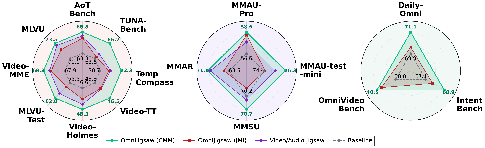
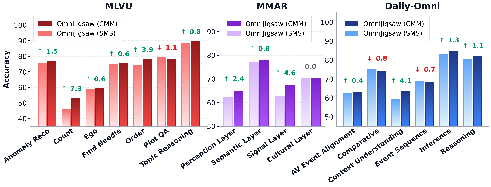
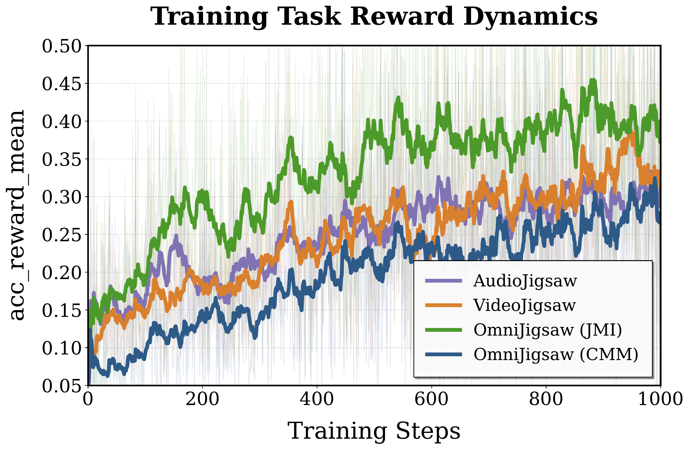
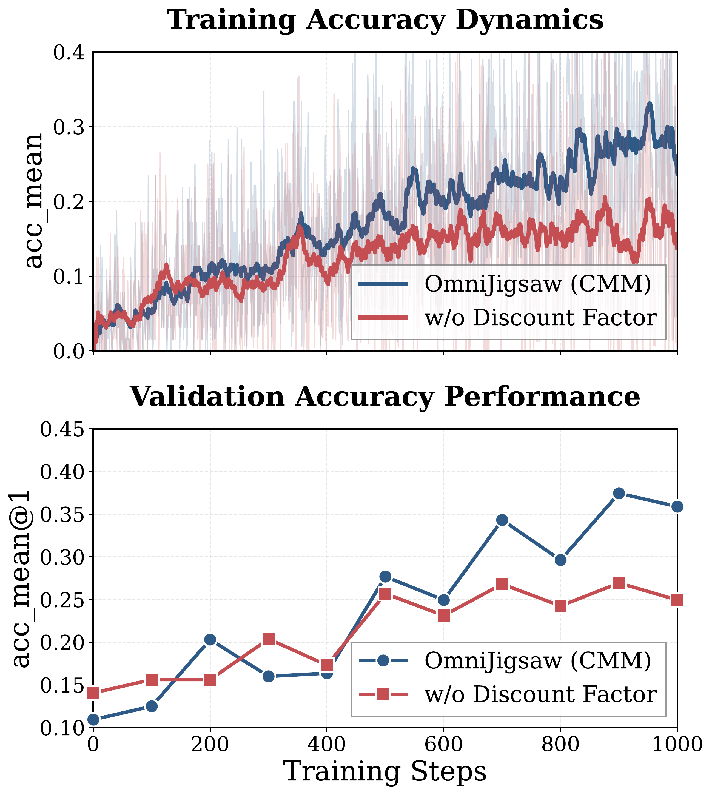
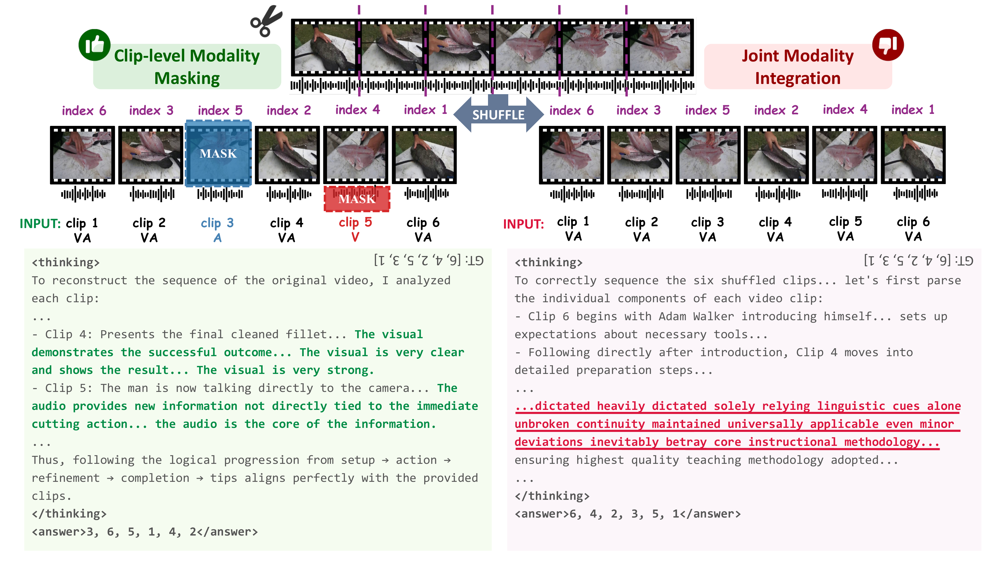
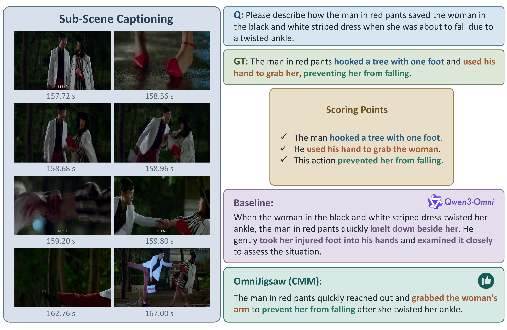
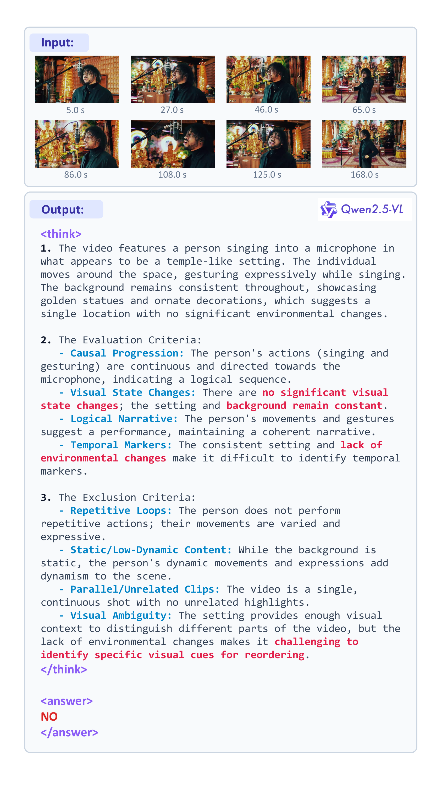
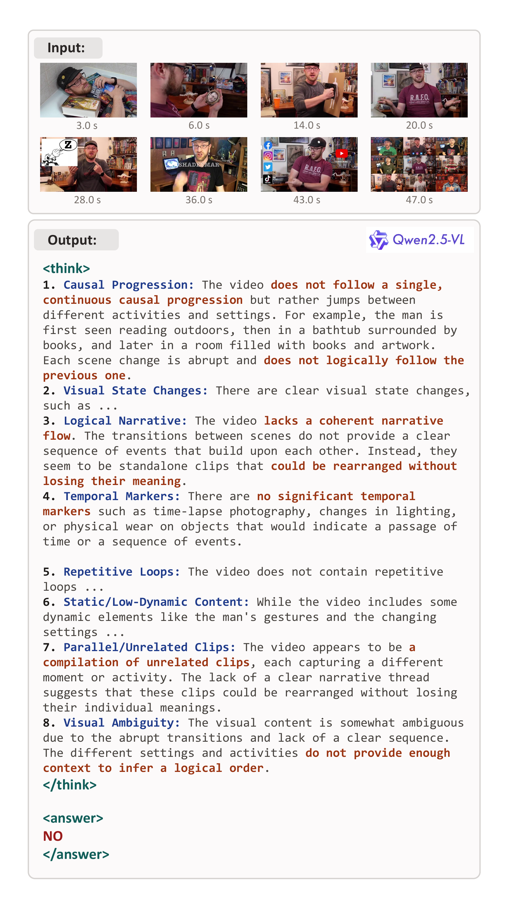

OmniJigsaw
Enhancing Omni-Modal Reasoning via Modality-Orchestrated Reordering
ABSTRACT
To extend the reinforcement learning post-training paradigm to omni-modal models for concurrently bolstering video-audio understanding and collaborative reasoning, we propose OmniJigsaw, a generic self-supervised framework built upon a temporal reordering proxy task.
Centered on the chronological reconstruction of shuffled audio-visual clips, this paradigm strategically orchestrates visual and auditory signals to compel cross-modal integration through three distinct strategies: Joint Modality Integration (JMI), Sample-level Modality Selection (SMS), and Clip-level Modality Masking (CMM).
Recognizing that the efficacy of such proxy tasks is fundamentally tied to puzzle quality, we design a two-stage coarse-to-fine data filtering pipeline, which facilitates the efficient adaptation of OmniJigsaw to massive unannotated omni-modal data.
Our analysis reveals a "bi-modal shortcut phenomenon" in joint modality integration and demonstrates that fine-grained clip-level modality masking mitigates this issue while outperforming sample-level modality selection. Extensive evaluations on 15 benchmarks show substantial gains in video, audio, and collaborative reasoning.
HIGHLIGHTS
Self-Supervised Proxy Task
Pioneers jigsaw-based RL post-training in the omni-modal domain using temporal reordering of shuffled audio-visual clips—requiring zero manual annotation.
Modality Orchestration
Three strategies (JMI, SMS, CMM) that govern cross-modal information flow, investigating the bi-modal shortcut phenomenon and compelling deep multi-modal reasoning.
Scalable Data Pipeline
A two-stage coarse-to-fine filtering pipeline (signal-based + semantic CoT screening) that transforms massive unannotated data into high-quality training puzzles.
15 Benchmark Gains
CMM achieves +4.38 on MLVU-Test, +2.50 on MMAR, and +1.70 on OmniVideoBench over a strong Qwen3-Omni baseline.
OMNIJIGSAW FRAMEWORK
A self-supervised RL post-training framework that enhances omni-modal reasoning through modality-orchestrated temporal reordering.

Figure 1. OmniJigsaw framework overview. JMI (top) provides full audio-visual access; CMM (center) enforces an information bottleneck via adaptive clip-wise masking; SMS (bottom) selects the primary informative modality.
Joint Modality Integration (JMI)
Retains complete synchronized visual and acoustic information for all clips. Acts as an identity mapping that preserves full omni-modal integrity.
Sample-level Modality Selection (SMS)
Deploys the model as a global dominance analyzer to identify the primary modality per sample, mitigating interference from less informative streams.
Clip-level Modality Masking (CMM)
Evaluates semantic density per clip and selectively masks the less salient modality, creating a cross-modal information bottleneck that forces deep integration.
DATA FILTERING PIPELINE

Figure 2. Two-stage data filtering pipeline: signal-based heuristic filtering ensures omni-modal integrity, followed by semantic-based CoT screening for narrative logic and state transitions.
QUANTITATIVE RESULTS
Comprehensive evaluation across video, audio, and omni-modal collaborative reasoning benchmarks.
| Method | AoTBench | TUNA-Bench | TempCompass | Video-TT | Video-Holmes | MLVU-Test | Video-MME | MLVU |
|---|---|---|---|---|---|---|---|---|
| Omni-R1 | 52.09 | 53.84 | 63.10 | 36.80 | 40.72 | 52.59 | 63.20 | 65.69 |
| HumanOmniV2 | 48.58 | 49.16 | 63.86 | 40.30 | 42.90 | 49.00 | 65.60 | 66.70 |
| Qwen3-Omni-30B | 64.88 | 62.57 | 70.63 | 44.30 | 50.84 | 57.97 | 72.10 | 70.01 |
| VideoJigsaw | 67.45 ↑2.57 | 63.41 ↑0.84 | 72.28 ↑1.65 | 44.90 ↑0.60 | 51.99 ↑1.15 | 60.16 ↑2.19 | 72.90 ↑0.80 | 71.90 ↑1.89 |
| OmniJigsaw (JMI) | 66.83 ↑1.95 | 62.78 ↑0.21 | 71.08 ↑0.45 | 44.70 ↑0.40 | 50.24 | 58.76 ↑0.79 | 72.90 ↑0.80 | 71.39 ↑1.38 |
| OmniJigsaw (SMS) | 68.12 ↑3.24 | 65.15 ↑2.58 | 72.03 ↑1.40 | 45.80 ↑1.50 | 52.26 ↑1.42 | 61.75 ↑3.78 | 72.90 ↑0.80 | 72.63 ↑2.62 |
| OmniJigsaw (CMM) | 68.90 ↑4.02 | 65.29 ↑2.72 | 72.03 ↑1.40 | 46.10 ↑1.80 | 52.53 ↑1.69 | 62.35 ↑4.38 | 73.10 ↑1.00 | 72.26 ↑2.25 |
ABLATIONS & INSIGHTS
Bi-Modal Shortcut Phenomenon. Under JMI, redundant audio-visual cues allow the model to rely on the dominant modality alone, bypassing deep cross-modal reasoning and underperforming uni-modal baselines.
Clip-level > Sample-level. CMM consistently outperforms SMS across fine-grained sub-capabilities. Fine-grained local modality selection conforms to the dynamic flow of audio-visual information, maximizing local information entropy.
Data Quality is Critical. Training without the data filtering pipeline leads to significant degradation (−3.99 on MLVU-Test), confirming that puzzle solvability depends on identifiable state evolution between clips.
Discount Factor as Catalyst. The accuracy-dependent discount factor suppresses sub-optimal solutions, maintaining a persistent upward training trajectory and preventing premature convergence.
Ablation Study on Data Quality & Reward Discount Factor
Results under CMM strategy. ↓blue = drop w/o filtering; ↓red = drop w/o discount factor.
| Method | Video | Audio | Omni-Modal | ||||||||||||
|---|---|---|---|---|---|---|---|---|---|---|---|---|---|---|---|
| AoT | TUNA | TempC | V-TT | V-Holmes | MLVU-T | V-MME | MLVU | MMAU-P | MMAU-TM | MMSU | MMAR | D-Omni | Intent | OVB | |
| OmniJigsaw | 66.83 | 66.20 | 72.34 | 46.50 | 48.29 | 62.75 | 69.30 | 73.46 | 58.59 | 76.30 | 70.70 | 71.00 | 71.09 | 68.89 | 40.50 |
| w/o Filtering | 64.94 ↓1.89 | 65.29 ↓0.91 | 71.14 ↓1.20 | 45.40 ↓1.10 | 47.41 ↓0.88 | 58.76 ↓3.99 | 68.60 ↓0.70 | 72.59 ↓0.87 | 57.67 ↓0.92 | 76.00 ↓0.30 | 70.40 ↓0.30 | 68.90 ↓2.10 | 70.01 ↓1.08 | 66.77 ↓2.12 | 40.10 ↓0.40 |
| w/o DF | 66.00 ↓0.83 | 64.11 ↓2.09 | 71.27 ↓1.07 | 44.70 ↓1.80 | 47.96 ↓0.33 | 61.95 ↓0.80 | 68.60 ↓0.70 | 72.36 ↓1.10 | 57.81 ↓0.78 | 75.90 ↓0.40 | 70.48 ↓0.22 | 69.30 ↓1.70 | 69.76 ↓1.33 | 67.66 ↓1.23 | 39.50 ↓1.00 |

Figure 3. Performance comparison of JMI, CMM, and uni-modal Jigsaw.

Figure 4. Sub-capability comparison between CMM and SMS.

Figure 5. Task reward dynamics during training.

Figure 6. Optimization dynamics with and without the discount factor.
The accuracy-dependent discount factor amplifies the value gap between sub-optimal and optimal solutions, driving the model to explore more aggressively and avoid premature convergence at local plateaus.
EXAMPLES

Figure 7. CoT reasoning comparison at training step 800. CMM (left) compels the model to jointly analyze visual and auditory cues by masking less salient modalities, while JMI (right) exhibits a bi-modal shortcut by "solely relying on linguistic cues."

Figure 8. Sub-Scene Captioning: Baseline vs OmniJigsaw (CMM).

Figure 9. Video Summarization: Baseline vs OmniJigsaw (CMM).

Case 1: Indistinct State Changes — rejected by semantic screening.

Case 2: Disjointed Narrative — rejected by semantic screening.
Citation
BibTeX
@misc{jia2026omnijigsaw,
title={OmniJigsaw: Enhancing Omni-Modal Reasoning via Modality-Orchestrated Reordering},
author={Yiduo Jia and Muzhi Zhu and Hao Zhong and Mingyu Liu and Yuling Xi and Hao Chen and Bin Qin and Yongjie Yang and Zhenbo Luo and Chunhua Shen},
year={2026},
eprint={2604.08209},
archivePrefix={arXiv},
primaryClass={cs.CV},
url={https://arxiv.org/abs/2604.08209},
}